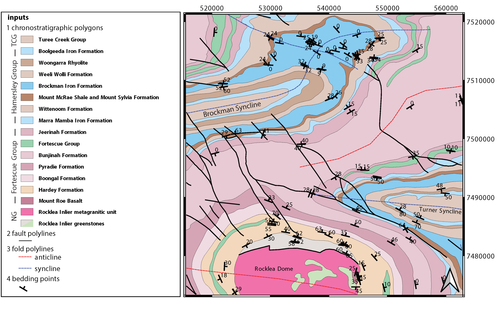
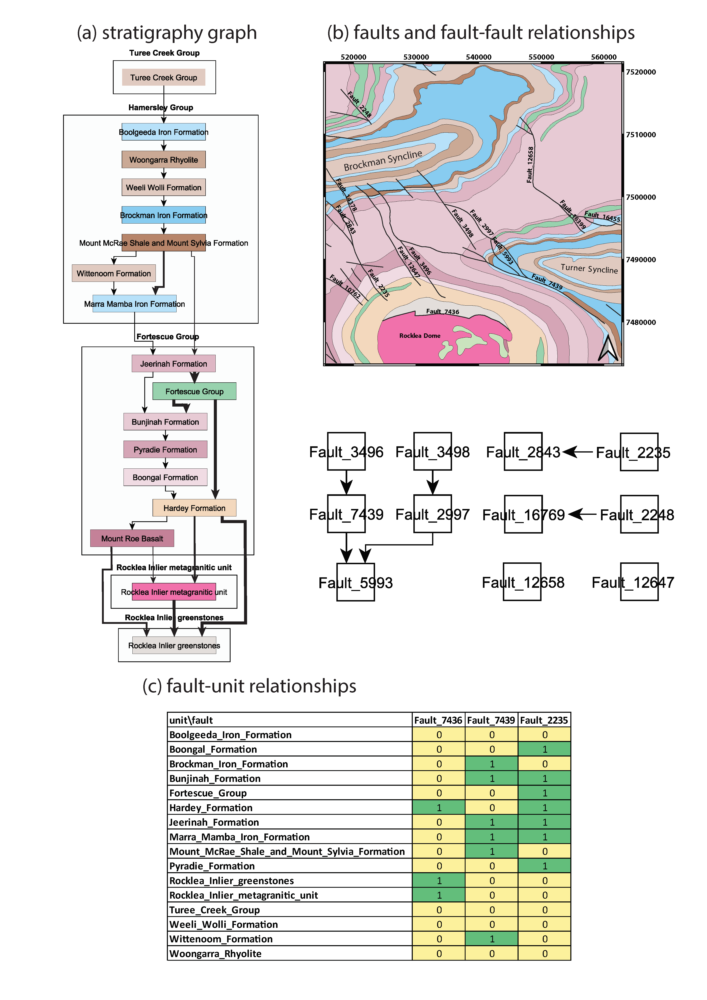
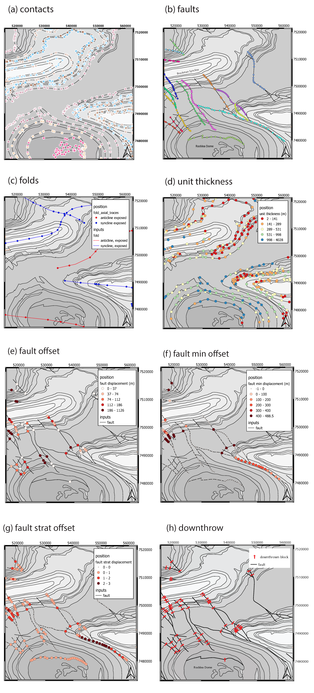
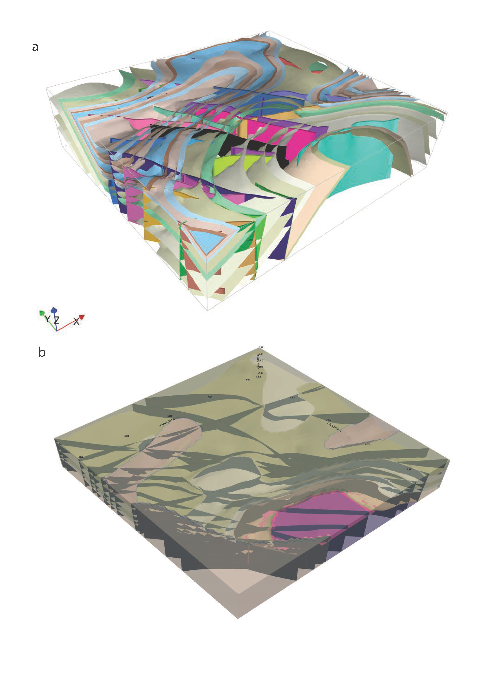

Defining map2loop parameters
- There are four types of parameters we need to define in order to use map2loop:
a) The paths or URLs that tell map2loop where the information layers (GIS files or online sources) are stored. These are passed to the map2loop update_config() method.
b) The names of fields and some text flags that tell map2loop where specific information can be retrieved from these layers. These are stored in an hjson format text file the path of which is passed to the map2loop Project() method.
c) A data output path, bounding box and Coordinate Reference System information to define the extent of the model and where to put it. This is passed to the map2loop update_config() method
d) Parameters that control the specific functioning of map2loop: what to calculate, what decimation factors to apply to the augmented data outputs, what resolution interpolations to use etc. These is passed to the map2looop project.run() method.
1.1 paths
These is passed to the map2loop Project() method.
Examples:
Remote WFS layers: See Example 1 notebook
proj=Project(geology_file = 'http://geo.loop-gis.org/geoserver/loop/wfs?service=WFS&version=1.0.0&request=GetFeature&typeName=loop:geol_500k&bbox={}&srs=EPSG:28350',
fault_file='http:// etc.',
structure_file='http:// etc.',
mindep_file='http:// etc.,
metadata="http://anyurl.org/mydata.hjson',
remote=True)
where remote=True signifies that WFS-served data will be accessed.
Remote WFS for GSWA with interactive selection of region of interest: See Example 2 notebook
proj=Project(loopdata_state="WA")
where remote=True signifies that WFS-served data will be accessed.
Standard Australia State Geological Surveys datasets, we have predefined the paths for all data and the following code is sufficient: See Example 2 Notebook
proj = Project(
loopdata_state="WA", # choice between 'WA','QLD','NT','NSW','VIC','SA', 'TAS'
)
Local GIS layers: See Example 3 notebook
proj=Project(geology_file="source/geology_polygons.shp",
fault_file="source/fault_polylines.shp",
fold_file="source/fold_polylines.shp",
structure_file="source/bedding_points.shp",
mindep_file="source/mindep_points.shp",
metadata="source/meta.hjson",
dtm_file="./source_data/terr50_gagg_gb_all.tif",
remote=False)
where remote=False signifies that local GIS files will be accessed. Paths can be relative or absolute, or even a URL, however for URLs, the components of the shapefile or TAB file have to be zipped up.
1.2 Layer field codes:
You will need to create or modify an hjson format file that provides the names of fields and some text flags that tell map2loop where and what specific information can be retrieved from these layers. These are stored in an hjson format text file the path of which is passed to the map2loop Project() method. The easiest way to get started is to use a jupyter notebook allows you to reduce errors by providing a primitive GUI for creating an hjson config file and associated python script, named: See Utility 1 - Config file generator.ipynb notebook. Alternatively if you are brave you can edit the values to the right of the colon in each row of an existing hjson file. For example to specify that the field in the geospatial layer that contains bedding dip information is called MYDIP, replace the appropriate code in the hjson file below with:
“d”:”MYDIP”,
Some verification is carried out by map2loop to ensure the required parameters have been defined. In the following section field refers to a field name in a geospatial layer; text refers to some text in the contents of a field for a specific geometric object. You shouldn’t use the same field for different codes as this may cause problems.
{
# Orientations-----------------------------
"d": "DIP", # field that contains dip information
"dd": "DIP_DIR", # field that contains dip direction information
"sf": "FEATURE", # field that contains information on type of structure
# text to search for in field defined by sf code to show that this is a bedding measurement
"bedding": "Bed",
# flag to determine measurement convention (currently "strike" or "dip direction")
"otype": "dip direction",
"bo": "TYPE", # field that contains type of foliation
# text to search for in field defined by bo code to show that this is an overturned bedding measurement
"btype": "overturned",
# Stratigraphy-----------------------------
"g": "GROUP_", # field that contains coarser stratigraphic coding
# field that contains alternate coarser stratigraphic coding if "g" is blank
"g2": "SUPERSUITE",
"c": "UNITNAME", # field that contains finer stratigraphic coding
"ds": "DESCRIPTN", # field that contains information about lithology
# field that contains alternate stratigraphic coding (not used??)
"u": "CODE",
"r1": "ROCKTYPE1", # field that contains extra lithology information
"r2": "ROCKTYPE2", # field that contains even more lithology information
"sill": "sill", # text to search for in field defined by ds code to show that this is a sill
# text to search for in field defined by r1 code to show that this is an intrusion
"intrusive": "intrusive", # text to search for in field defined by ds code to show that this is an volcanic (not intrusion) "volcanic": "volcanic",
# Mineral Deposits-----------------------------
"msc": "SITE_CODE", # field that contains site code of deposit
"msn": "SHORT_NAME", # field that contains short name of deposit
"mst": "SITE_TYPE_", # field that contains site type of deposit
"mtc": "TARGET_COM", # field that contains target commodity of deposit
"mscm": "SITE_COMMO", # field that contains site commodity of deposit
"mcom": "COMMODITY_", # field that contains commodity group of deposit
# text to search for in field defined by mst code that shows site to ignore
"minf": "Infrastructure",
# Timing-----------------------------
"min": "MIN_AGE_MA", # field that contains minimum age of unit defined by ccode
"max": "MAX_AGE_MA", # field that contains maximum age of unit defined by ccode
#faults and folds-----------------------------
"f": "FEATURE", # field that contains information on type of structure
# text to search for in field defined by f code to show that this is a fault
"fault": "Fault",
"ff": "FEATURE", # field that contains information on type of structure
# text to search for in field defined by f code to show that this is a fold axial trace
"fold": "Fold axial trace",
"fdip": "DIP", # field for numeric fault dip value
# text to search for in field defined by fdip to show that this has no known dip
"fdipnull": "0",
"fdipdir": "DIP_DIR", # field for text fault dip direction value
# flag for text fault dip direction type num e.g. 045 or alpha e.g. southeast
"fdipdir_flag": "alpha",
"fdipest": "DIP_EST", # field for text fault dip estimate value
# text to search for in field defined by fdipest to give fault dip estimate in increasing steepness
"fdipest_vals": "gentle,moderate,steep",
# field that contains information on name of fault (not used??)
"n": "NAME",
"t": "TYPE", # field that contains information on type of fold
# text to search for in field defined by t to show that this is a syncline
"syn": "syncline",
# ids-----------------------------
"o": "OBJECTID", # field that contains unique id of geometry object
"gi": "GEOPNT_ID", # field that contains unique id of structure point
"deposit_dist": 500
}
1.3 ROI, Projection, output paths
A data output path which points to a new or existing directory (a new directory will be created if needed), bounding box and Coordinate Reference System information to define the extent of the model. This is be passed to the map2loop update_config() method
proj.update_config(
out_dir='./model-test',
overwrite='overwrite',
bbox_3d={
"minx": 500000,
"miny": 7490000,
"maxx": 545000,
"maxy": 7520000,
"base": -4800,
"top": 1200,
},
proj_crs={'init': 'EPSG:28350'},
quiet='none'
)
where bbox coordinates are in CRS defined by proj_crs
where overwite can be ‘overwrite’, ‘true’
where quiet controls whether we allow or block print statements and matplotlib figures. Use ‘none’ to quiet nothing, ‘all’ to quiet everything, ‘no-figures’ to disable plots and allow text output. Defaults to ‘none’
1.4 Full list of update_config flags:
- Project flags:
out_dir Path to write output files to. :type out_dir: string
overwrite Allow overwriting the given out_dir if it exists, false, true or in-place, defaults to false :type overwrite: string, optional
bbox_3d 3D bounding box of coordinates and base/top values defining the area, defaults to { “minx”: 0, “maxx”: 0, “maxx”: 0, “maxy”: 0, “base”: -10000, “top”: 1200, } :type bbox_3d: dict, optional
dtm_crs Set the projection of the dtm, defaults to {‘init’: ‘EPSG:4326’} :type dtm_crs: dict, optional
proj_crs Set the projection of the input data, defaults to None :type proj_crs: dict, optional
step_out How far to consider outside the re-projected dtm, defaults to None :type step_out: int, optional
quiet Allow or block print statements and matplotlib figures, ‘None’ to quiet nothing, ‘all’ to quiet everything, ‘no-figures’ to disable plots and allow text output. Defaults to ‘None’ :type quiet: string, optional
clut_path Path to custom map colours file :type clut_path: string, optional
model_engine Which modelling engine to use and set associated flags for, defaults to loopstructural :type model_engine: string, optional
run_flags Global dictionary that defines custom params such as decimation and minimum fault length, see below :type run_flags: dict, optional
**kwargs
1.5 Calculation control parameters
These control the specific functionality of map2loop: what to calculate, what decimation factors to apply to the augmented data outputs, what resolution interpolations to use etc. These are passed to the map2looop project run() method:
proj.run()
This method performs the data processing steps of the map2loop workflow, and can be modified by including the following parameters as run_flags [defaults](data type):
aus: Indicates if area is in Australia for using ASUD, the Australian Stratigraphic Units Database to redfine stratigraphic relationships. Should only be True in Australia, and when the finest stratigraphic level is the ASUD standard Formation name. [True] (bool)
close_dip: Dip to assign to all new fold axial trace orientations. If -999 then the nearest interpolated dip for that supergroup will be used instead. [-999] In degrees (int)
contact_decimate: Save every nth contact data point. 0 means save all data. [5] (int)
contact_dip: Dip to assign to all new basal contact orientations. If -999 then the nearest interpolated dip for that supergroup will be used instead. [-999] In degrees (int)
contact_orientation_decimate: Save every nth contact orientation point. 0 means save all data. [5] (int)
deposits: Mineral deposit names for focused topology extraction. [“Fe,Cu,Au,NONE”] Topological analysis of faults and strat will only be carried out relative to these deposit type. NONE must always be one of the types (str)
dist_buffer: Buffer for processing basal contacts. Basal contact vertices less than this distance from the fault will be ignored. [10] In metres. (int)
dtb: Path to depth to basement grid. Geotif of depths in the same projection system as everything else. [‘’] (str)
fat_step: How much to step out normal to the fold axial trace. Distance in metres. [750] In metres. (int)
fault_decimate: Save every nth fault data point along fault tace. 0 means save all data. [5] (int)
fault_dip: default fault dip [90] In degrees (int)
fold_decimate: Save every nth fold axial trace data point. 0 means save all data. [5] (int)
interpolation_scheme: What interpolation method to use of scipy_rbf (radial basis) or scipy_idw (inverse distance weighted). [‘scipy_rbf’] (str)
interpolation_spacing: Interpolation grid spacing in meters. Used to interpolation bedding orientations [500] In metres or if a negative value defines fixed number of grid points in x & y (int)
intrusion_mode: 1 to exclude all intrusions from basal contacts, [0] to only exclude sills. [0] (int)
max_thickness_allowed: when estimating local formation thickness [10000] in metres. (int)
min_fault_length: Min fault length to be considered. In metres. [5000] In meters. (int)
misorientation: [30] Maximum misorientation in pole to great circle of bedding between groups to be considered part of same supergroup (int)
null_scheme: How null values present in the depth to basement geotif. [‘null’] (str)
orientation_decimate: Save every nth orientation data point. 0 means save all data. [0] type int
pluton_dip: default pluton contact dip [45] In degrees (int)
pluton_form: Possible forms from domes, saucers or pendant. [‘domes’] (str)
thickness_buffer: How far away to look for next highest unit when calculating formation thickness [5000] In metres. (int)
use_fat: Use fold axial trace info to add near-axis bedding info [True] (bool)
use_interpolations: Use all interpolated dips for modelling [True] (bool)
fault_orientation_clusters:[2] number of clusters for kmeans clustering of faults by orientation (int)
fault_length_clusters: number of clusters for kmeans clustering of faults by length [2] (int)
use_roi_clip: use non-rectangular ROI polygon [False] (bool)
roi_clip_path: path to non-rectangular ROI polygon shapefile [‘’] (bool)
1.6 Calculation workflow parameters
seismic_section: Add data from a single seismic section (paths hardwired for the moment) [False] (bool)
cover_map: Add data from a depth to basement grid (paths hardwired for the moment) [False] (bool)
near_fault_interpolations: Add stratigraphic info near faults [False] (bool)
fold_axial_traces: Add dip info either side of fold axial trace to enhance second order folds [False] (bool)
stereonets: Calculate stereonets to define supergroups [True] (bool)
formation_thickness: Calculate formation thickness [True] (bool)
polarity: Calculate bedding polarity (doesn’t work!!) [False] (bool)
strat_offset: Calculate stratigraphic offset across faults [True] (bool)
contact_dips: Add fixed or interpolated dips to contacts [True] (bool)
Individual workflow parameters can be overwritten AFTER the call to proj.update_config() as follows:
proj.workflow['contact_dips'] = False
Example minimum code
An example minimum code to run map2loop with mostly default settings might look like this See Example 3 notebook ):
from map2loop.project import Project
proj=Project(geology_file="source/geology_polygons.shp",
fault_file="source/fault_polylines.shp",
fold_file="source/fold_polylines.shp",
structure_file="source/bedding_points.shp",
mindep_file="source/mindep_points.shp",
metadata="source/meta.hjson"
dtm_file="http://services.ga.gov.au/gis/services/DEM_SRTM_1Second_over_Bathymetry_Topography/MapServer/WCSServer?",
)
proj.update_config(
out_dir='./model-test',
bbox_3d={
"minx": mbbox.total_bounds[0], #500000,
"miny": mbbox.total_bounds[1], #7490000,
"maxx": mbbox.total_bounds[2], #545000,
"maxy": mbbox.total_bounds[3], #7520000,
"base": -4800,
"top": 1200,
"local': True
},
proj_crs={'init': 'EPSG:28350'}
)
proj.run()
This code will take information from the GSWA 1:500K Interpeted Bedrock Geology map:
{kind=link}
which generates a series of augmented outputs, including: a topological analysis of the spatial and temporal relationships of fetaures in the map:
{kind=link}
extraction of basal contacts of units, fault locations, orientaion of bedding and foliations, and derived products such as local formation thickness estimates:
{kind=link}
these can then be fed into 3D modelling packages such as LoopStructural (top Link to interactive 3D model) and gempy (lower).
{kind=link}